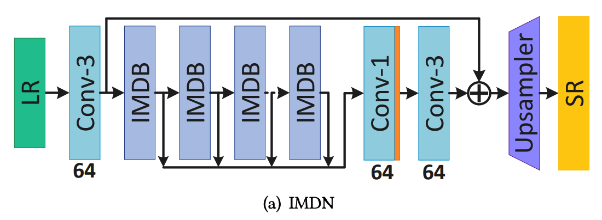
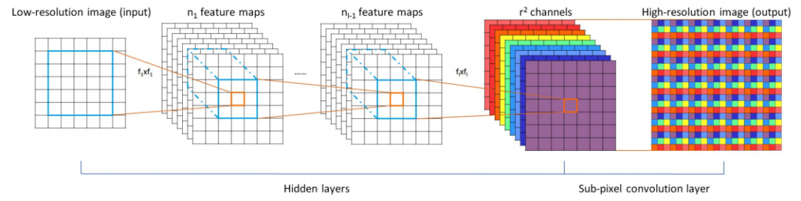
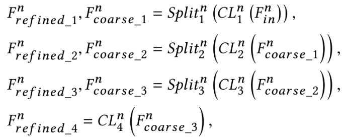

1 相关工作
1.1 图像和视频超分辨率算法的种类
1.1.1 基于单幅图像的超分辨率
基于单幅图像的超分辨率（Single Image Super-Resolution，SISR）是基于单幅图像的超分辨率，只参考当前图像，不存在时间序列的概念。
Deep Learning 超分辨率鼻祖是SRCNN（Image Super-Resolution Using Deep Convolutional Networks）。
EDSR修改了SRResNet，构造了更深的，更宽的残差网络，利用智能拓扑结构和大量参数，大大提高了超分辨率性能。
RDN基于EDSR，在Residual Block中引入了参考DenseNet的Densely Connected Block。
RCAN引入了Channel Attention（通道注意力）机制来凸显重要的特征通道。
Liu探索了将非局部模块应用于图像重建的有效。同样，Zhang等人利用非局部注意力来更好地指导其主干分支中的特征提取，从而达到更好的性能。
对于轻量级的超分辨率网络，出现了IDN，对Feature Map进行蒸馏分离（split）处理来更好地利用分层的特征。这里的蒸馏（distillation）貌似是作者自创的一个概念，指的是split而不是Deep Learning中常说的蒸馏概念。
1.1.2 基于多幅图像的超分辨率
基于多幅图像的超分辨率（Multiple Image Super-Resolution，MISR），会参考时间序列中相邻的多副图像以实现对当前图像高分辨率更好的预测推理。通常MISR的图像重建效果相比SISR会在画面表现上更好，但是考虑到我们是要用在直播，有较强的实时性要求，MISR参考了时间序列，产生更大的计算量，从而造成更大的推理时长，所以我们暂不考虑。
2 其他网络的尝试
在工作中，我们尝试了很多种超分辨率算法及网络。它们有各自的一些特点，单也有各自的局限性。
最先尝试的是SRCNN，几乎在所有的超分网络中都拿其当作Baseline。可是发现推理速度很慢，而且效果一般，只能达到32左右的PSNR。FSRCNN比SRCNN稍微好一些但是提升并不明显。
接着试验了RCAN，是发表在ECCV2018的，在前两年效果一直处于比较领先的地位。可是尽管可以达到高达38左右的PNSR和0.96左右的SSIM，但速度比较慢遂放弃。
之后尝试了ESRGAN，是CVPR2019的一篇基于GAN的超分论文。其特点是可以对画面中的细节较好地重建。尽管PSNR和SSIM得分不是很突出，在Set5数据集上仅有32和0.9左右，可是其人眼观看效果较为真实。可是GAN生成图片纹理不稳定，合成视频序列后无法得到稳定的画面。而且由于参数量巨大，在V100显卡下大约1500ms可将一张1080P的图片超分到4K。所以由于这两点原因放弃使用ESRGAN。
最后用IMDN网络（Lightweight Image Super-Resolution with Information Multi-distillation Network）做了一下实验，这是ACM MM 2019的论文。由于其主打轻量级网络，速度在V100显卡上可以达到500ms将一张1080P的图片超分到4K，超分出的画面稳定且高质量，而且结构简单便于修改，所以决定选择IMDN，在其基础上进行精简优化。
后续在参加Agora的实时超分比赛时，发现也是拿IMDN当作Baseline的，感觉所见略同hhh。
3 IMDN网络
3.1 网络结构

上图是IMDN的主要网络结构，LR（低分辨率图片）输入网络，先经过一层3×3的卷积层初步的对其浅层特征进行提取。卷基层输出的Feature Map到了此网络结构最为核心位置：几个连在一起的IMDB（information multi-distillation block）。IMDB会对输入进来的Feature Map进行一系列的特征提取，这里提取到的属于深层特征。经过IMDB处理后的一系列特征会被输入到一个1×1的卷积层做特征融合，这里在卷积后会经过Leaky ReLU激活函数的处理，再输入到一个3×3的卷积层。将此处3×3的卷积层的输出与最前面第一个3×3的卷积层的输出相加，此处运用了残差学习的思想。然后把相加后的特征输入到Upsampler模块中，得到最终超分后的图像。
上面的损失函数中，HIMDN代表IMDN网络。Θ代表网络的可更新参数，∥·∥1是L1规范，共N对成对的低分辨率（LR）和高分辨率（HR）训练集图片。
上图是Upsampler模块的结构，第一层是一个3×3的卷积层，提取到的特征输出到Sub-pixel模块中，此模块又叫PixelShuffle，是一种用作上采样的方法，其思想来源于发表于CVPR2016的一个超分辨率网络Real-Time Single Image and Video Super-Resolution Using an Efficient Sub-Pixel Convolutional Neural Network（ESPCN），它的主要思想是将c×r2个Feature Map合并成c个原图×r倍的大Feature Map，在此处就是合并成了一副超分辨率后的高分辨率图片。其网络结构如图所示:

上图是information multi-distillation block （IMDB）模块的结构，IMDB主要分为三个部分。第一部分是Progressive Refinement Module（PRM），此处运用了蒸馏的思想，模块的输入进入到第一个3×3的卷积层，卷积的输出进入一个Channel Split中进行了一次特征分化一部分特征被保留下来，另一部分被传到后面，经过数次卷积和特征分化，最后一层卷积直接只保留一部分特征，和前面每次保留下来的特征拼接在一起，传入IMDB的第二个模块CCA Layer。CCA层的输出传入一个1×1的卷积层，卷积的输出和此IMDB的输出（此处也用到了残差学习的思想）相加在一起作为此IMDB的输出。
PRM的工作大体流程可表示为以下公式：

PRM最后的concat可表示为：
上图是对比度感知通道注意模块（Contrast-aware channel attention，CCA）的结构，作者用标准差与均值之和来代表每层的Feature Map全局信息，后经过两层1×1的卷积层和一个Sigmod激活函数，输出与CCA的输出做一个向量积作为CCA的输出。
对比度信息的值可以由以下公式得出：
上图公式中的HGC()代表全局对比度信息的评估函数。有了这个，CCA模块可以使本文的IMDN网络做出稳定的单图像超分效果。
数据集制作
用OBS对游戏进行观战录屏，录制出的原始4KHR视频画面质量要达到尽可能高的程度。然后再根据业务实际LR视频编码参数，对HR视频进行下采样编码得到LR视频。
然后对视频进行抽帧截图采样，如60fps的视频，每秒抽出10张图来当作数据集。这里要注意每秒抽出的画面不能太少，因为技能释放得很快，抽帧太稀疏会导致数据集中的技能画面不够完整。如果最后画面数量太多，可以手工删除一些出现最多的简单跑图画面。
这里视频及截图的处理工具均采用的FFmpeg，在我的另一篇文章中有我做的学习笔记，是关于FFmpeg的常用命令的使用方法。
评测指标
在超分辨率中对图像推理质量的评测，一般同时参考PSNR和SSIM两个指标：
- PSNR：峰值信噪比（Peak Signal to Noise Ratio），PSNR=10*log10((2^n-1)^2/MSE)
- SSIM：结构相似性（Structural SIMilarity）
其实PSNR是看的最多的，但是有时候PSNR高，但是人眼观感却不一定好；反而有些PSNR不高，SSIM非常高的，这时人眼观感比较好，如ESRGAN。
对于视频来说，其实更多的视频质量评判标准来使用，比如Netflix制定的也是行业使用最多的VMAF。
工程化
在对模型进行精简优化之后，一共有几个关键点：
- TensorRT量化及推理部署
- CUDA上做编解码及数据前后处理
- 多卡并行计算
TensorRT量化之后的模型，肯定会导致比原始模型画面推理效果变差，但是速度提升却是很大的。经过我们针对业务场景的考量，这部分画面质量的损失在可以接受的范围内。
做好以上三个关键点，就可以满足延迟极低的实时超分辨率，可以用在直播上。
Referrences
[1] Hui Z, Gao X, Yang Y, et al. Lightweight image super-resolution with information multi-distillation network[C]//Proceedings of the 27th ACM International Conference on Multimedia. 2019: 2024-2032.
[2] FFmpeg 学习.http://shangxin.me/2020/03/23/FFmpeg-%E5%AD%A6%E4%B9%A0/, 2020
[3] 百度百科.PSNR.https://baike.baidu.com/item/psnr, 2020
[4] 百度百科.SSIM.https://baike.baidu.com/item/SSIM, 2020